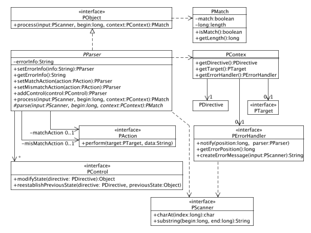

Interfaces and basic classes of the framework.
{@link pobs.PParser} is the central class of POBS. All concrete parsers extend
this abstract class.
In package pobs.parser small
concrete general-purpose parsers are defined. To create your own parser
you just use these predefined parsers as building block. They are defined
in such a way that it is easy to build a parser from an (E)BNF syntax
definition.
The following class diagram gives an overview of the architecture of the
framework:

After parsing a parser returns a {@link pobs.PMatch} instance which tells
whether parsing was successful or not. One can attach a
{@link pobs.PAction} for both cases.
For parsing a parser needs a {@link pobs.PScanner} which capsulates the source
to be parsed and a {@link pobs.PContext}. The parser context holds
- a {@link pobs.PDirective} object giving directives for parsing
(e.g. do case-sensitive parsing or not),
- an optional {@link pobs.PTarget} manipulated by actions,
- an optional {@link pobs.PErrorHandler} which will be notified
by the parser in case of unsuccessful parsing.
One can add {@link pobs.PControl} objects to a parser. They modify the
PDirective object before parsing.